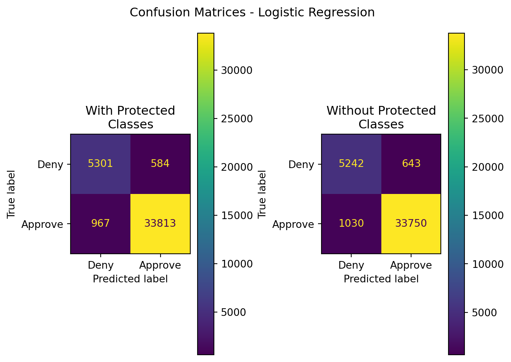
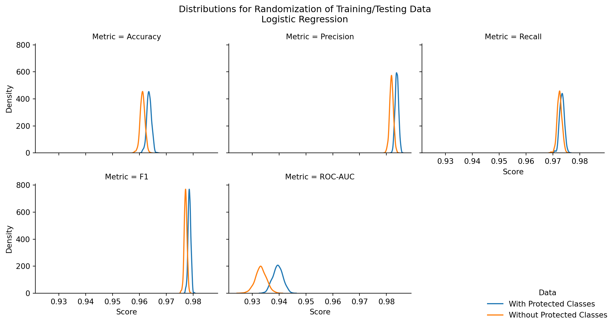

#build the training and test data
X_train,X_test,y_train,y_test = train_test_split(
mca, #mca[mca.columns[:126]],
labels,
stratify=labels,
random_state=8808,
test_size=0.2
)
X_train_npc,X_test_npc,y_train,y_test = train_test_split(
mca_npc, #mca_npc[mca_npc.columns[:86]],
labels,
stratify=labels,
random_state=8808,
test_size=0.2
)
y_train_copy = y_train.copy()
# X_train,y_train = # SMOTE(random_state=8808).fit_resample(X_train,y_train_copy.copy())
# X_train_npc,y_train = SMOTE(random_state=8808).fit_resample(X_train_npc,y_train_copy.copy())
results = pd.DataFrame({
'Model':[],
'Data':[],
'Accuracy':[],
'Precision':[],
'Recall':[],
'F1':[],
'ROC-AUC':[]
})Appendix F — Regression Code
F.1 Logistic Regression
Data was prepared in Appendix G.
Performing train-test split of 80/20, stratified on the outcome “approve/deny”.
#train the model
lr = LogisticRegression(max_iter=300)
lr_npc = LogisticRegression(max_iter=300)lr.fit(X_train,y_train)
y_pred = lr.predict(X_test)
results.loc[len(results)] = {
'Model':'Logistic Regression',
'Data':'With Protected Classes',
'Accuracy':accuracy_score(y_test,y_pred),
'Precision':precision_score(y_test,y_pred),
'Recall':recall_score(y_test,y_pred),
'F1':f1_score(y_test,y_pred),
'ROC-AUC':roc_auc_score(y_test,y_pred)
}#run the model with the test dataset
lr_npc.fit(X_train_npc,y_train)
y_pred_npc = lr_npc.predict(X_test_npc)
results.loc[len(results)] = {
'Model':'Logistic Regression',
'Data':'Without Protected Classes',
'Accuracy':accuracy_score(y_test,y_pred_npc),
'Precision':precision_score(y_test,y_pred_npc),
'Recall':recall_score(y_test,y_pred_npc),
'F1':f1_score(y_test,y_pred_npc),
'ROC-AUC':roc_auc_score(y_test,y_pred_npc)
}# display_labels=My_BNB_Model.classes_)
#display summarized classification results
import matplotlib.pyplot as plt
fig,axes=plt.subplots(nrows=1,ncols=2)
ConfusionMatrixDisplay(
confusion_matrix(
y_pred=y_pred,y_true=y_test
),
display_labels=['Deny','Approve']
).plot(ax=axes[0])
ConfusionMatrixDisplay(
confusion_matrix(
y_pred=y_pred_npc,y_true=y_test
),
display_labels=['Deny','Approve']
).plot(ax=axes[1])
axes[0].set_title('With Protected\nClasses')
axes[1].set_title('Without Protected\nClasses')
plt.suptitle("Confusion Matrices - Logistic Regression")
plt.tight_layout()
plt.show()
| Model | Data | Accuracy | Precision | Recall | F1 | ROC-AUC |
|---|---|---|---|---|---|---|
| Logistic Regression | With Protected Classes | 0.961859 | 0.983022 | 0.972197 | 0.977579 | 0.936481 |
| Logistic Regression | Without Protected Classes | 0.958859 | 0.981304 | 0.970385 | 0.975814 | 0.930562 |
# are the results significantly different? do a randomization test...
results = pd.DataFrame({
'Model':[],
'Data':[],
'Accuracy':[],
'Precision':[],
'Recall':[],
'F1':[],
'ROC-AUC':[]
})
np.random.seed(2036)
for i in range(500):
print('iteration: {}'.format(i+1))
r = np.random.randint(0,5000,1)
X_train,X_test,y_train,y_test = train_test_split(
mca, #mca[mca.columns[:126]],
labels,
stratify=labels,
random_state=r[0],
test_size=0.2
)
X_train_npc,X_test_npc,y_train,y_test = train_test_split(
mca_npc, #mca_npc[mca_npc.columns[:86]],
labels,
stratify=labels,
random_state=r[0],
test_size=0.2
)
y_train_copy = y_train.copy()
# X_train,y_train = SMOTE(random_state=8808).fit_resample(X_train,y_train_copy.copy())
# X_train_npc,y_train = SMOTE(random_state=8808).fit_resample(X_train_npc,y_train_copy.copy())
# lr = LogisticRegression(max_iter=300)
# lr_npc = LogisticRegression(max_iter=300)
lr.fit(X_train,y_train)
lr_npc.fit(X_train_npc,y_train)
y_pred = lr.predict(X_test)
y_pred_npc = lr_npc.predict(X_test_npc)
results.loc[len(results)] = {
'Model':'Logistic Regression',
'Data':'With Protected Classes',
'Accuracy':accuracy_score(y_test,y_pred),
'Precision':precision_score(y_test,y_pred),
'Recall':recall_score(y_test,y_pred),
'F1':f1_score(y_test,y_pred),
'ROC-AUC':roc_auc_score(y_test,y_pred)
}
results.loc[len(results)] = {
'Model':'Logistic Regression',
'Data':'Without Protected Classes',
'Accuracy':accuracy_score(y_test,y_pred_npc),
'Precision':precision_score(y_test,y_pred_npc),
'Recall':recall_score(y_test,y_pred_npc),
'F1':f1_score(y_test,y_pred_npc),
'ROC-AUC':roc_auc_score(y_test,y_pred_npc)
}results.to_csv('../data/logRegRandTest.csv',index=False)#visualize the output distributions
res = results.copy()
res = res.melt(id_vars=['Model','Data'],var_name='Metric',value_name='Score')
g = sns.FacetGrid(data=res,col='Metric',hue='Data',col_wrap=3)
g.map_dataframe(
sns.kdeplot,
x='Score'#,
# hue='Data'
)
g.add_legend(loc='lower right')
plt.suptitle("Distributions for Randomization of Training/Testing Data\nLogistic Regression")
plt.tight_layout()
plt.show()
| Stat | z-score | p-value | top performer | top mean | difference in means |
|---|---|---|---|---|---|
| Accuracy | 44.648798 | 0.000000 | With Protected Classes | 0.963586 | 0.002457 |
| Precision | 47.173034 | 0.000000 | With Protected Classes | 0.983867 | 0.001985 |
| Recall | 16.219786 | 0.000000 | With Protected Classes | 0.973386 | 0.000889 |
| F1 | 43.977874 | 0.000000 | With Protected Classes | 0.978598 | 0.001431 |
| ROC-AUC | 50.590439 | 0.000000 | With Protected Classes | 0.939526 | 0.006305 |
F.2 Multinomial Naive Bayes
Multinomial Naive Bayes code and data processing can be found in Appendix D